PILE | Side Table
PILE is a side table inspired by the simple act of stacking, where everyday objects come together to create height and form. Its stackable trays can be arranged in different configurations, offering flexible surfaces for books, drinks, and other everyday items.
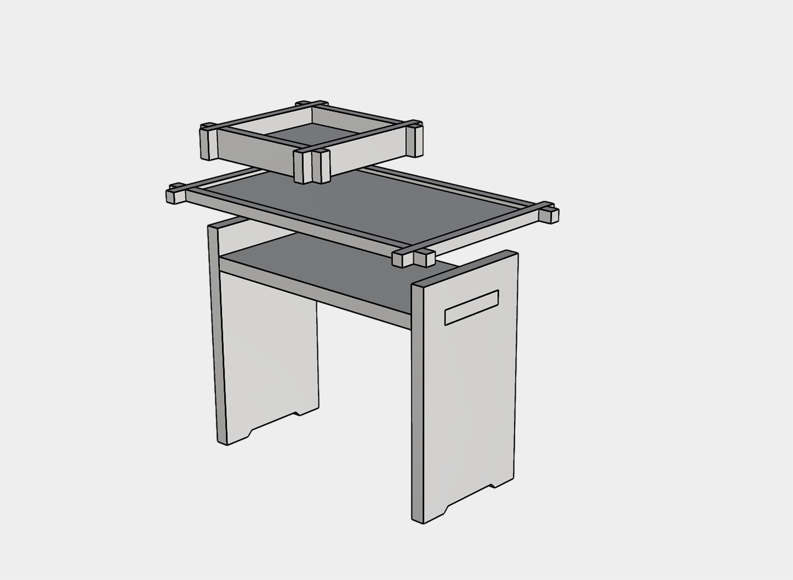
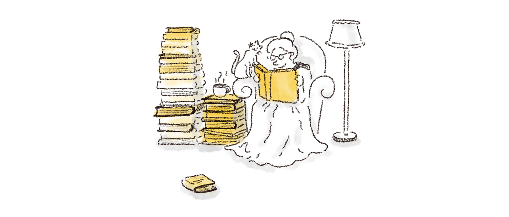
A quiet moment with a book often comes with a few things close at hand. Books gather beside the chair, one on top of another, gradually forming a small stack. What begins as a simple way of keeping things nearby becomes an arrangement of layers, creating height and a surface to rest everyday objects.
PILE takes inspiration from these familiar stacks of books and the way they naturally build up in our everyday spaces. By translating this idea into a stackable side table, PILE allows trays to be added and rearranged, creating different heights and configurations to accommodate the things we use throughout the day.
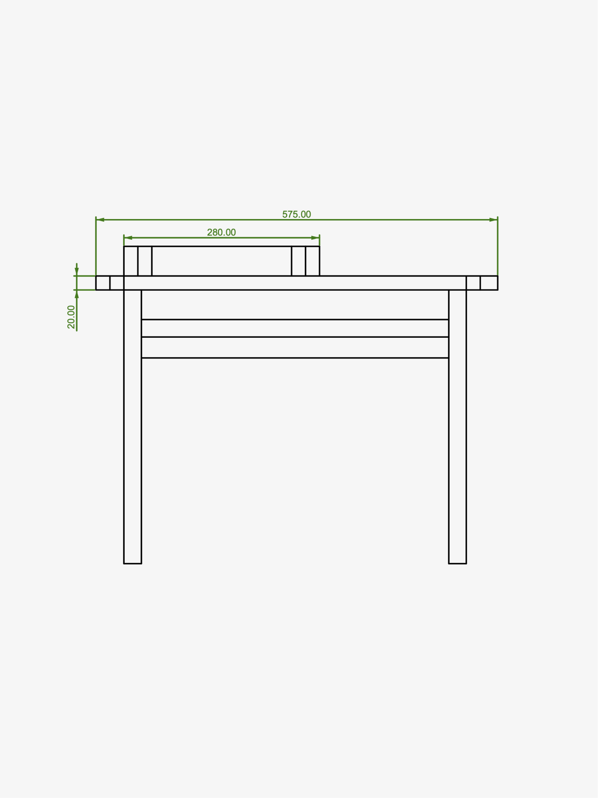
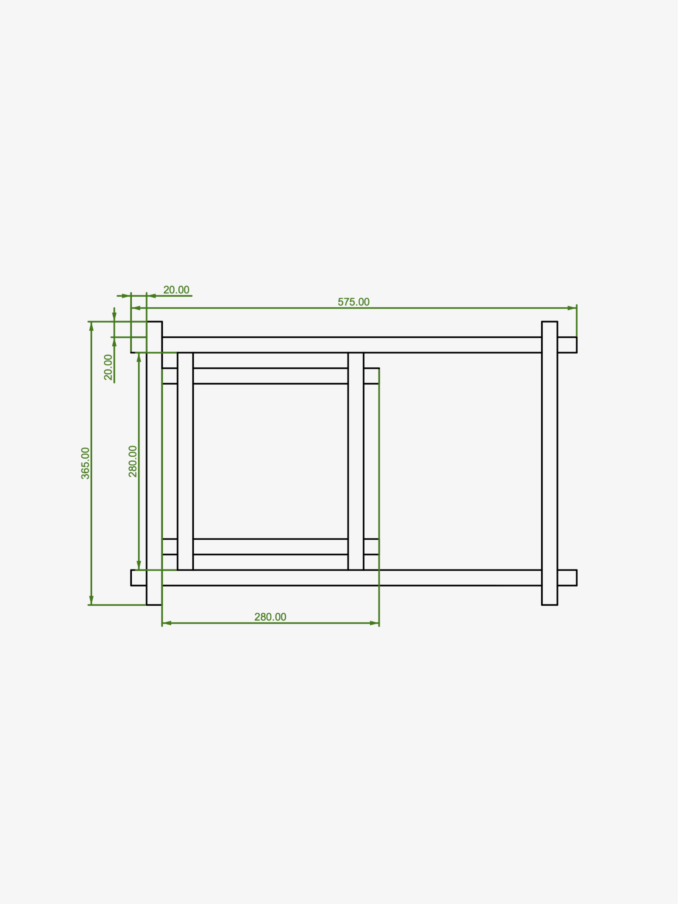
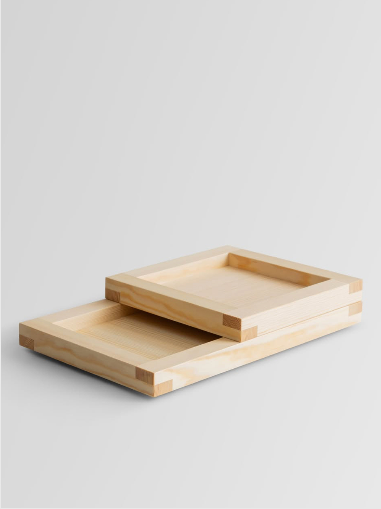
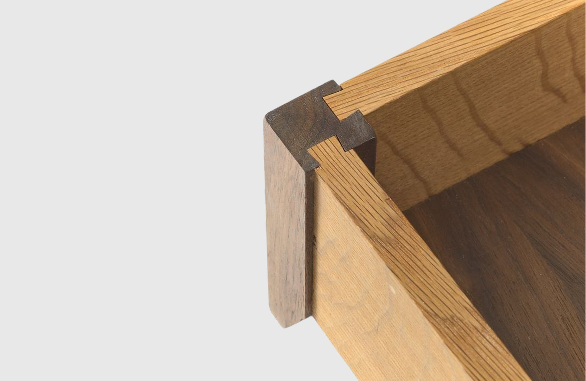
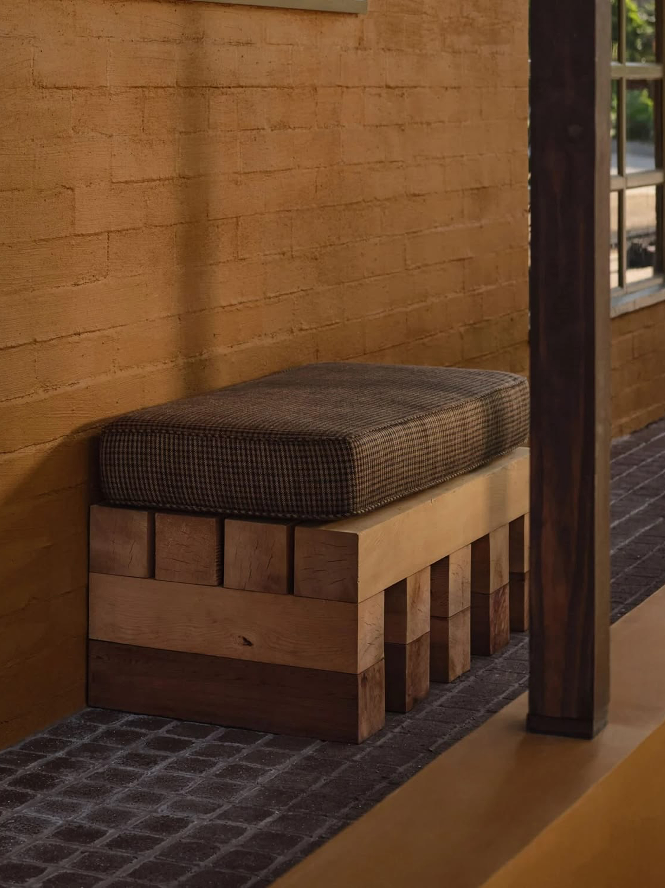
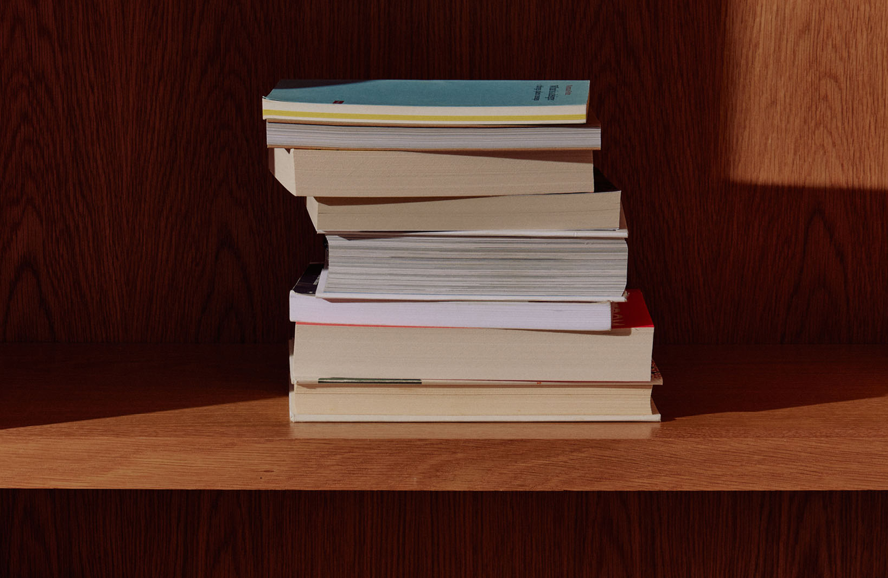
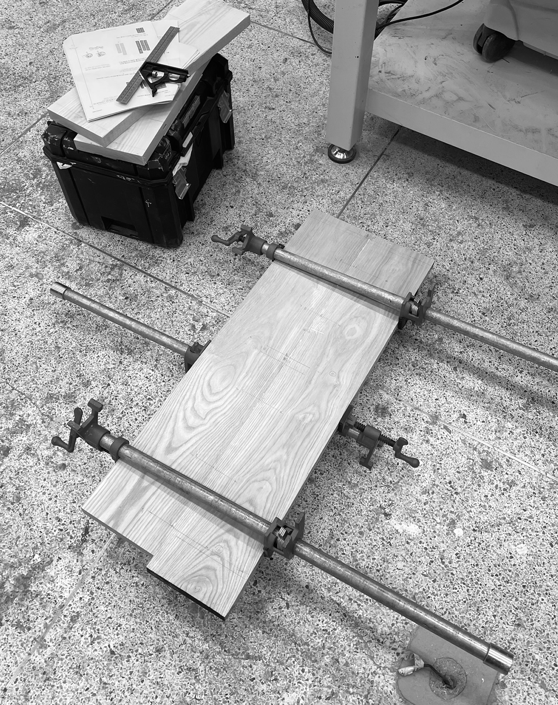
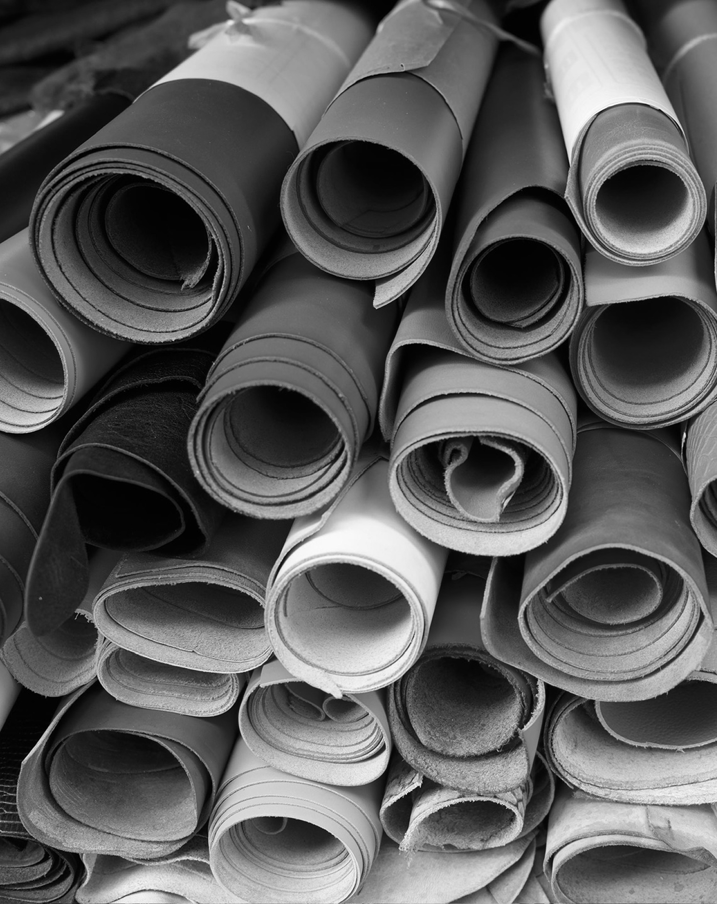
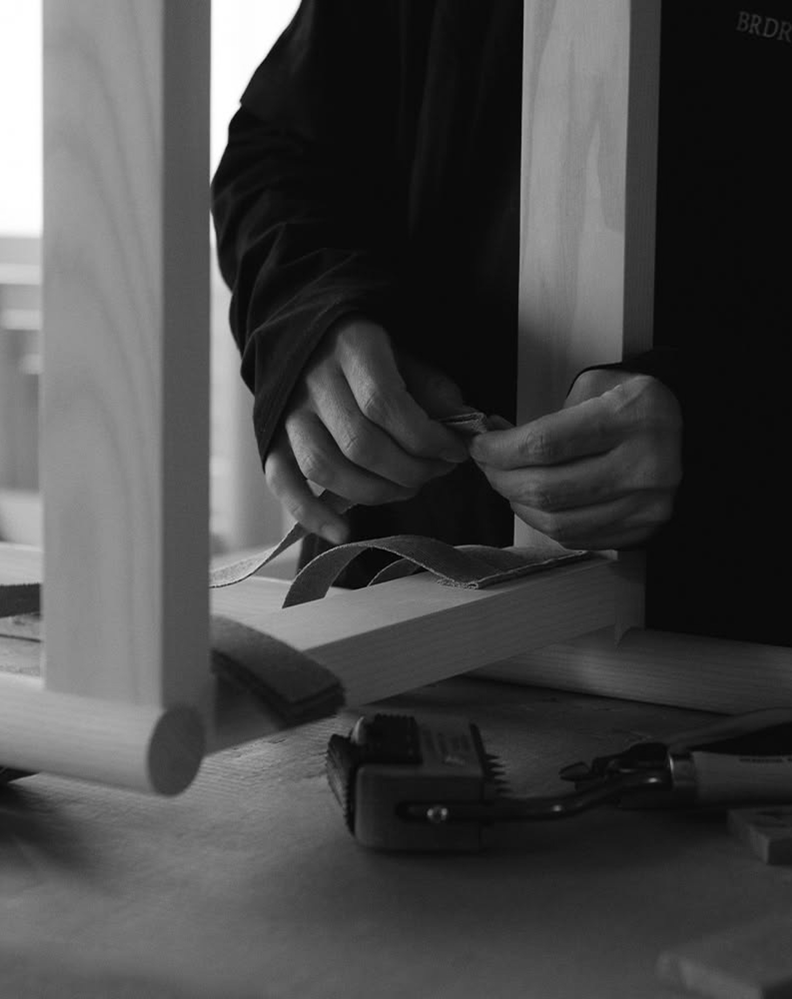